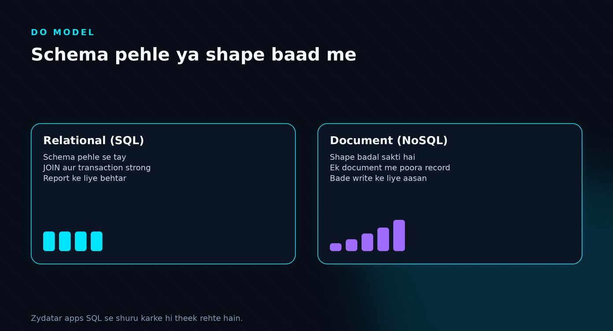
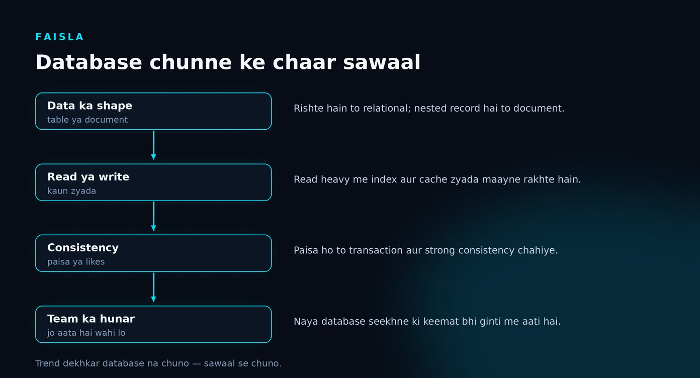

SQL vs NoSQL: Kab Kaunsa Database Chunein, 6 Sawaal
"हमें SQL लेना चाहिए या NoSQL?" — यह सवाल हर नई project में आता है, और अक्सर इसका जवाब technology के trend से दिया जाता है, ज़रूरत से नहीं। सच यह है कि दोनों में से कोई बेहतर नहीं है; दोनों अलग-अलग तरह के सवालों के लिए बने हैं। गलत चुनाव का नुकसान सालों तक चलता है, क्योंकि database बदलना सबसे महंगा काम है।
इस guide में मैं दोनों को उनके काम के हिसाब से खोलूँगा — चार बुनियादी फर्क, छह सवाल जो चुनाव तय करते हैं, NoSQL के चार प्रकार, consistency और transaction का मतलब, scaling के तरीके, और वे पाँच गलतियाँ जो शुरुआत में होती हैं।
छोटा जवाब: अगर आपके data में रिश्ते हैं, पैसा और transaction हैं, और आपको रिपोर्टिंग चाहिए, तो relational (SQL) database लें — ज़्यादातर apps के लिए PostgreSQL सही शुरुआत है। अगर data का shape बहुत बदलता है, हर record अपने आप में पूरा है, और write का load बहुत बड़ा है, तो document store ठीक रहता है। "बड़े scale" अपने आप NoSQL का जवाब नहीं है — बड़ी companies आज भी SQL पर चलती हैं।
दोनों क्या हैं
Relational database में data tables में रहता है, और tables के बीच रिश्ते पहले से तय होते हैं। आप schema बनाते हैं — कौन से columns, किस type के, कौन सा primary key — और database उस नियम को लागू करता है। इसका फायदा यह है कि गलत data अंदर ही नहीं आता।
NoSQL एक छत्र शब्द है कई तरह के databases के लिए जो tables और fixed schema पर निर्भर नहीं हैं। सबसे आम document store है, जहाँ हर record एक JSON जैसा document होता है और अलग documents में fields अलग हो सकते हैं।

चार बुनियादी फर्क
| पहलू | SQL | NoSQL (document) |
|---|---|---|
| Schema | पहले से तय | लचीला |
| रिश्ते | JOIN से | Document के अंदर nested |
| Transaction | कई tables पर एक साथ | अक्सर एक document तक |
| Query | SQL, reporting में मज़बूत | API या query language |
इनमें सबसे ज़्यादा मायने रखता है तीसरा — transaction. मान लीजिए पैसे एक account से दूसरे में जा रहे हैं। दोनों entries एक साथ होनी चाहिए, वरना पैसा गायब या दुगना दिखेगा। Relational database यह काम ACID properties से करता है। Document store में भी transactions होते हैं, पर उनका दायरा अक्सर छोटा होता है।
छह सवाल जो चुनाव तय करते हैं

1. Data का shape क्या है? अगर हर record एक जैसा है — order, payment, invoice — तो table सही है। अगर हर record अलग ढाँचे का है — जैसे अलग-अलग तरह के form submissions — तो document ठीक रहता है।
2. क्या रिश्ते ज़रूरी हैं? "इस customer के सारे orders और उनका payment" — यह सवाल SQL में दो JOIN में हल होता है। अगर ऐसे सवाल रोज़ आते हैं, तो relational ही लें।
3. पैसा और transaction? जहाँ पैसा, stock या booking है, वहाँ strong consistency चाहिए। यह SQL का घर है।
4. Read ज़्यादा है या write? Read भारी हो तो index, cache और replica से काम चल जाता है — दोनों में। Write बहुत भारी हो और record अलग-अलग हो, तब document store आसान पड़ता है।
5. कितना बड़ा data? जब तक एक machine पर data और index आ जाएँ, SQL पूरी तरह ठीक है। शुरुआती apps के लिए यह सवाल लगभग हमेशा "छोटा" होता है।
6. Team क्या जानती है? जो database team को आता है, वही सबसे तेज़ और सबसे सुरक्षित है। नई technology सीखने की कीमत भी project की लागत में जुड़ती है।
NoSQL ke chaar prakar
| प्रकार | किसके लिए | उदाहरण |
|---|---|---|
| Document | JSON जैसे record, बदलता shape | MongoDB, CouchDB |
| Key-value | तेज़ lookup, cache, session | Redis, DynamoDB |
| Wide-column | बहुत बड़ा write, time-series | Cassandra, HBase |
| Graph | रिश्तों पर सवाल | Neo4j |
ध्यान दें कि "NoSQL" चार अलग-अलग चीज़ों को एक नाम में बाँधता है। किसी को cache चाहिए, किसी को graph — दोनों का design अलग है। इसलिए "NoSQL लेंगे" कहना काफ़ी नहीं; यह तय करना पड़ेगा कि कौन सा प्रकार।
Consistency aur scaling
Relational database में default यह माना जाता है कि आपने जो लिखा, वह तुरंत पढ़ सकेंगे — इसे strong consistency कहते हैं। कई NoSQL systems में इसे adjust किया जा सकता है, ताकि speed बढ़े पर थोड़ी देर के लिए पुराना data मिल सके।
यह चुनाव तब मायने रखता है जब आप एक ही चीज़ को कई जगह रखते हैं। जैसे social feed में 2 सेकंड पुराना data ठीक है; bank balance में नहीं।
Scaling की तीन सीढ़ियाँ हैं। पहली — बड़ा server (vertical). दूसरी — replica, जहाँ read बँटता है। तीसरी — sharding, जहाँ data कई machines में बाँटा जाता है। NoSQL systems sharding पहले से आसान बनाते हैं, पर SQL में भी यह मुमकिन है — बस ज़्यादा काम लगता है। ज़्यादातर apps तीसरी सीढ़ी तक पहुँचते ही नहीं।
Kab kaunsa — seedhe udaharan
SQL चुनें: e-commerce orders और payments, booking systems, ERP, accounting, inventory, user accounts और permissions, किसी भी चीज़ के लिए जहाँ report चाहिए और रिश्ते हैं।
Document store चुनें: content management, product catalogue जहाँ हर category के fields अलग हैं, user-generated forms, logs जिनका shape बदलता रहता है।
Key-value चुनें: session storage, cache, rate limiting counters, feature flags।
Graph चुनें: social network, fraud detection, recommendation जहाँ सवाल "कौन किससे जुड़ा है" वाला हो।
ध्यान दें कि एक app में एक से ज़्यादा databases हो सकते हैं। बहुत सी teams मुख्य data SQL में रखती हैं और cache/session Redis में। यह सामान्य और ठीक है — बशर्ते हर database का काम साफ़ हो।
Schema migration: asli farq
शुरुआत में schema लचीला लगता है, पर जब data बढ़ता है तो सवाल बदल जाता है। SQL में नया column जोड़ना एक migration है — छोटा, नियंत्रित और record में दर्ज। Document store में नया field बस कुछ documents में आ जाता है, और धीरे-धीरे data में दो हालतें साथ चलने लगती हैं: पुराने documents में field नहीं है, नए में है।
यही लचीलापन बाद में सबसे बड़ी समस्या बन जाता है। हर query को तीन सवाल पूछने पड़ते हैं — field है या नहीं, किस type का है, और अगर नहीं है तो क्या मानें। SQL में database खुद एक ही जवाब देता है; document store में यह ज़िम्मेदारी application code की हो जाती है।
इसका इलाज यह है कि लचीलेपन को अनुशासन के साथ रखें: हर document में एक schema_version field रखें, और पुराने documents को पीछे से एक script से अपडेट करें। जो team यह नहीं करती, उसका data model छह महीने में समझ से बाहर हो जाता है।
Reporting aur analytics
एक और फर्क जो अक्सर बाद में समझ आता है — रिपोर्टिंग। SQL में analyst खुद query लिखकर जवाब निकाल सकता है, क्योंकि tables और JOIN साफ़ हैं। Document store में data nested होता है, इसलिए हर रिपोर्ट के लिए पहले उसे सपाट (flatten) करना पड़ता है — अक्सर एक अलग pipeline से।
इसलिए अगर business रोज़ नए सवाल पूछता है — "पिछले हफ़्ते किस शहर में कौन सा product बिका" जैसे — तो relational database का फायदा साफ़ है। अगर data सिर्फ़ app के अंदर इस्तेमाल होता है और रिपोर्ट कम बनती हैं, तो यह पहलू कम मायने रखता है।
SQL se NoSQL kab jaayein
लगभग कभी नहीं, सिर्फ़ इसलिए कि "NoSQL modern है"। जाने की असली वजहें तीन हैं: schema इतना बदलता है कि migrations रुक नहीं रहे, write का load एक machine की हद पार कर गया है, या data इतना बड़ा है कि sharding के बिना नहीं चलेगा।
और जब जाएँ, तो साथ में यह भी तय करें कि reporting कैसे होगी। कई teams ने यह गलती की — application के लिए NoSQL लिया और छह महीने बाद पाया कि हर report के लिए अलग pipeline बनानी पड़ रही है।
Database चुनने की सोच वही है जो बड़े systems में काम आती है — इसे मैंने system design basics में विस्तार से लिखा है। और SQL की बुनियादी queries के लिए SQL guide पढ़ें।
paanch galtiyan
1. Trend से चुनना। "बड़ी company ने लिया" आपकी ज़रूरत का जवाब नहीं है। उनके पास अलग team, अलग load और अलग समस्याएँ हैं।
2. Schema को बोझ समझना। Schema गलत data को रोकता है। इसे हटाने का मतलब है कि गलतियाँ बाद में, और महंगी, पकड़ में आएँगी।
3. JOIN की जगह duplicate data। Document store में data दोहराया जाता है, पर तब उसे update करना पड़ता है हर जगह। अगर यह भूल गए, तो दो जगह अलग सच बन जाएँगे।
4. Transaction की जाँच न करना। पैसे वाले काम में हमेशा पूछें — अगर बीच में process मर जाए, तो data किस हालत में रहेगा?
5. Backup और restore न सोचना। किसी भी database का चुनाव तब अधूरा है जब तक backup, restore और migration का plan न हो।
Ek hi data, do tarike
फर्क साफ़ करने के लिए एक order लें। SQL में यह तीन tables में बैठेगा — orders, order_items और customers. इसका मतलब है कि एक order दिखाने के लिए दो JOIN लगेंगे, पर हर चीज़ एक ही जगह रहेगी: customer का address बदला तो सब orders में बदल जाएगा।
Document store में वही order एक document बन जाएगा, जिसमें customer का नाम, address और सारी items nested होंगी। एक query में पूरा order मिल जाता है और पढ़ना बहुत तेज़ है। पर अगर customer अपना address बदले, तो उसके पुराने सारे orders के documents भी update करने पड़ेंगे — वरना कुछ orders पुराना address दिखाएँगे और कुछ नया।
यही असली चुनाव है: क्या आप चाहते हैं कि हर चीज़ एक जगह रहे (SQL), या हर पढ़ने वाला सवाल एक ही document से हल हो (document store)? पहला update आसान करता है, दूसरा read आसान करता है।
Mera anubhav
मैंने एक बार एक inventory app के लिए document store चुना, क्योंकि हर product के attributes अलग थे और schema बदलना आसान लगा। छह महीने बाद सबसे ज़्यादा माँगी जाने वाली report थी — "किस category का stock कितना बिका" — और वह हर बार पूरी collection scan कर रही थी। जो काम SQL में एक GROUP BY था, वहाँ एक pipeline बनाना पड़ा।
उस project से मैंने एक नियम सीखा: पहले वह रिपोर्ट लिखो जो business रोज़ माँगेगा, फिर database चुनो। अगर वह रिपोर्ट आसानी से बनती है, तो चुनाव ठीक है। अगर नहीं, तो अभी बदलो — बाद में बहुत महंगा पड़ेगा।
तीसरी बात जो मैं आज हर project में दोहराता हूँ — चुनाव के बाद उसे लिखकर रखें: क्यों यह database, कौन सा सवाल हल हो रहा है, और किस हद पर हम दोबारा सोचेंगे। छह महीने बाद नई team यही document पढ़कर समझ जाती है कि फैसला किस आधार पर हुआ था।
दूसरी बात: छोटी team के लिए एक ही database रखना बड़ा फायदा है। दो databases का मतलब दो backup, दो monitoring, दो migration — और यह सब उस समय खर्च होता है जो product पर लगना चाहिए।
नतीजा
SQL और NoSQL में से किसी को "आधुनिक" या "पुराना" कहना गलत है। SQL रिश्तों, पैसे और report के लिए बना है; NoSQL बदलते shape और बहुत बड़े write के लिए। शुरुआत में PostgreSQL जैसा relational database चुनें, जब तक कोई ठोस वजह न हो। और जो भी चुनें, backup, restore और reporting का plan साथ में बनाएँ।
अक्सर पूछे जाने वाले सवाल
क्या NoSQL ज़्यादा तेज़ है?
हमेशा नहीं। Simple key lookup में हाँ, पर JOIN और complex report में SQL अक्सर आगे निकलता है। Speed data model और index पर निर्भर है, नाम पर नहीं।
क्या SQL बड़े scale पर नहीं चलता?
चलता है। Replication, partitioning और अच्छे index के साथ बहुत बड़ी systems SQL पर चलती हैं। Sharding मुश्किल है, पर ज़्यादातर apps को उसकी ज़रूरत ही नहीं पड़ती।
क्या एक app में दोनों ले सकते हैं?
ले सकते हैं — जैसे मुख्य data SQL में और cache Redis में। बस हर database का काम तय रखें, वरना दोनों जगह data अलग हो जाएगा।
MongoDB कब सही है?
जब हर record का shape अलग हो, data एक document में पूरा आ जाए, और रिपोर्टिंग की ज़रूरत कम हो।
क्या database बाद में बदल सकते हैं?
बदल सकते हैं, पर यह महीनों का काम है और downtime का जोखिम है। इसलिए शुरुआती चुनाव सोच-समझकर करें।